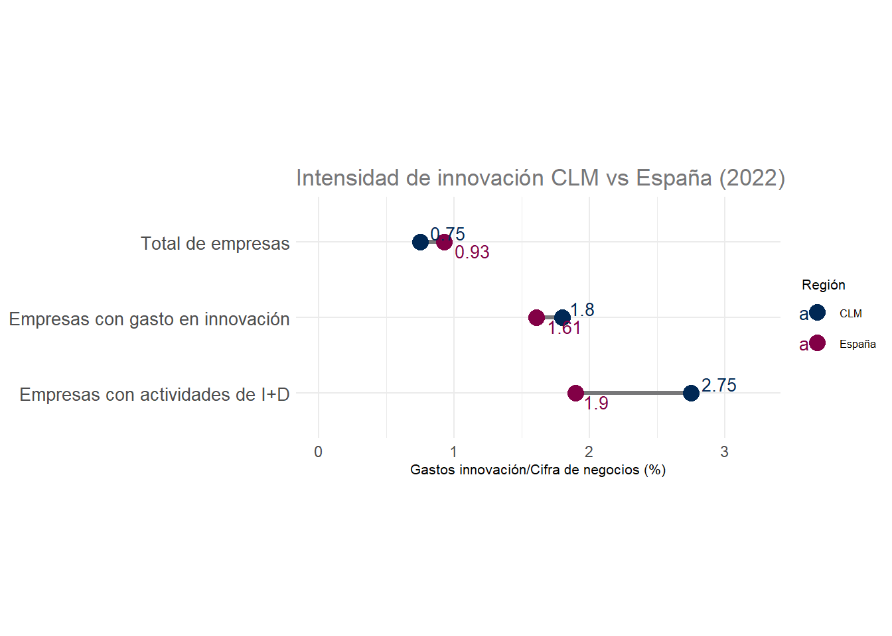
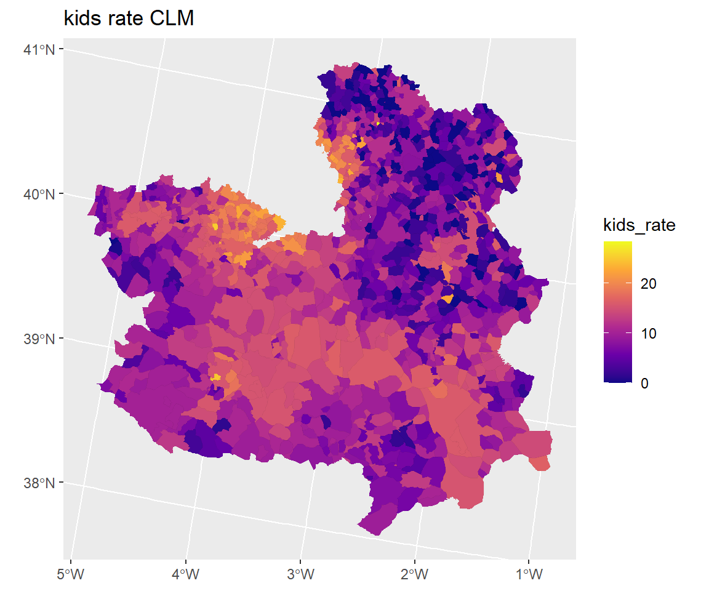

| Sector | Gasto | Porcentaje |
|---|---|---|
| Adm. Públicas | 51041 | 15.34 |
| Enseñanza Superior | 91150 | 27.39 |
| Empresas | 190075 | 57.11 |
| IPSFL | 565 | 0.17 |
| Total | 332831 | 100.00 |
1 Ciencia y tecnología
1.1 Estadísticas sobre actividades de I+D
En 2023, CLM destinó un total de 332,8 millones de euros a gastos en I+D interna
Esta cifra representa un 1,49% del total nacional (22.379 millones de euros).
El sector empresarial concentra el mayor esfuerzo en I+D en CLM.
Absorbe el 57,1% del gasto, seguido por la enseñanza superior (27,4%) y las administraciones públicas (15,3%).
CLM presenta una mayor intensidad de innovación que la media nacional en el conjunto de empresas (0.93 frente a 0.75)
Sin embargo, se sitúa por debajo en las empresas con gasto en innovación (1.61 frente a 1.80) y en aquellas con actividades de I+D (1,90 frente a 2,75).

CLM presenta una mayor intensidad de innovación que la media nacional en el conjunto de empresas (0.93 frente a 0.75). Sin embargo, se sitúa por debajo en las empresas con gasto en innovación (1,61 frente a 1,80) y en aquellas con actividades de I+D (1,90 frente a 2,75), lo que sugiere una menor especialización en innovación avanzada.
1.2 Telecomunicaciones
CLM avanza en digitalización con más de 98 líneas móviles por cada 100 habitantes. Guadalajara y Toledo impulsan la conectividad en la región con los mejores datos en banda ancha y telefonía fija. (a elegir uno)
CLM avanza en digitalización con más de 98 líneas móviles por cada 100 habitantes.
Guadalajara y Toledo impulsan la conectividad en la región con los mejores datos en banda ancha y telefonía fija.

La televisión de pago en CLM alcanza 11,5 abonados/100 habitantes, ligeramente inferior a la que presenta España 14,3. La provincia con mayor penetración es Guadalajara (15,7), mientras que Albacete (8,1) presenta la menor proporción de abonados.
CLM cuenta con 3.983.928 accesos NGA instalados, siendo Toledo (1.288.366) la provincia con mayor número de accesos, mientras que Cuenca (434.912) presenta la menor cobertura. Comparando con España, CLM representa aproximadamente un 4,6% del total nacional, indicando que, aunque la infraestructura es significativa, su peso relativo frente al conjunto del país es reducido.
1.3 Uso de las TIC en empresas
El 99,7% de las empresas de CLM tienen ordenadores, pero solo el 49.6% del personal los usa con Internet
Solo el 55.8 % del personal utiliza ordenadores con fines empresariales (frente al 68.4 % en España), y apenas el 49,6% accede a Internet con fines laborales (frente al 63,3%).
Transformación digital y adopción tecnológica
La conexión a Internet alcanza a casi el 99% de las empresas en CLM
El 75,9% de las empresas cuentan con sitio web, pero solo el 21,2% realizan analítica de datos internamente y apenas el 7,6% emplean inteligencia artificial, lo que evidencia una fuerte presencia digital básica pero una baja adopción de tecnologías avanzadas.

Nota
Unicamente el 5,95% de los trabajadores teletrabaja de manera regular.
| Indicador | CLM (%) | España (%) |
|---|---|---|
| Empresas que emplean especialistas en TIC* | 8.48 | 15.67 |
| Empresas con mujeres especialistas TIC*** | 45.92 | 41.92 |
| Personal especialista TIC**** | 1.27 | 4.49 |